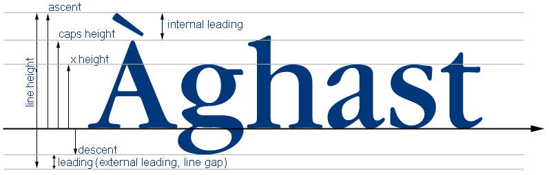
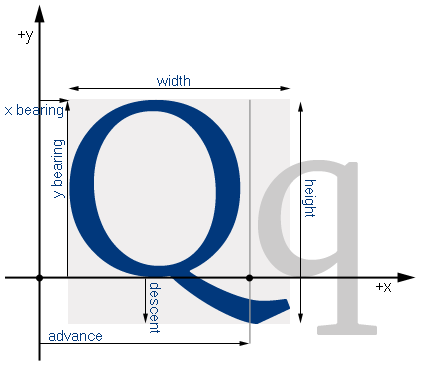

EAText largely follows the established conventions of typography. There is no definitive standard for typographical metrics, though there is little disagreement on the topic. We present font metrics and glyph metrics respectively as defined by EAText. Font metrics are metrics that describe the entire font, whereas glyph metrics describe individual glyphs.
One metric you may notice is not present is the font size (e.g. 12 pt.). The reason for this is that font size is an arbitrary metric decided by the font creator. It normally is roughly equal to how many 1/72s of an inch the ascent + descent is. The leading shown below is not necessarily present in a font and may be zero or near zero in size.
Font Metrics

Glyph Metrics
